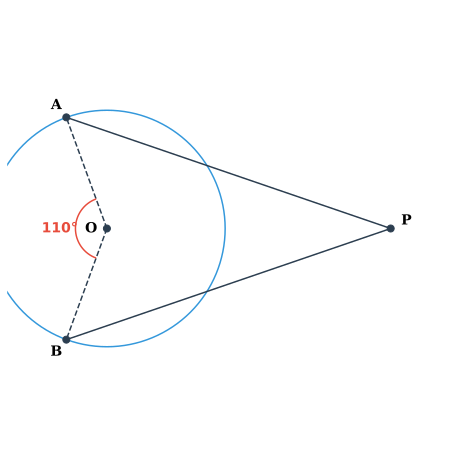
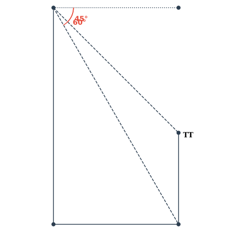
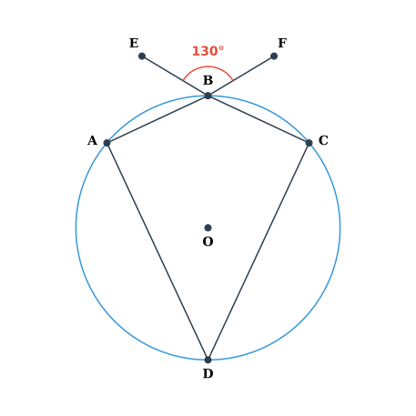
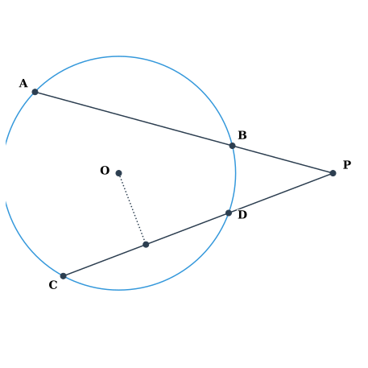
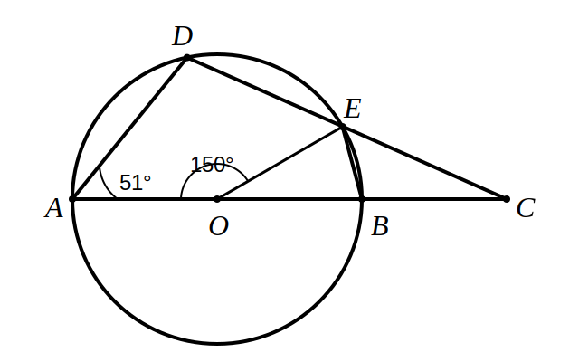
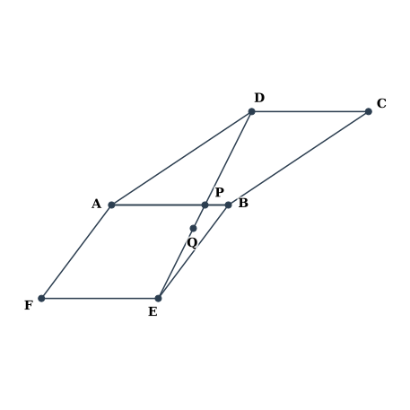
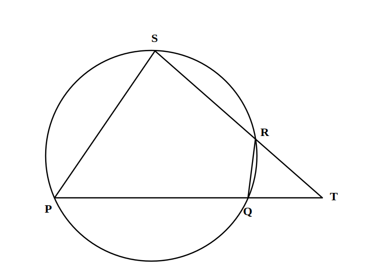

CISCE (ICSE) CLASS 10 MATHEMATICS
RMO-LEVEL PRACTICE EXAMINATION: RATIO, PROPORTION & CIRCLES
Time: 2½ Hours | Max Marks: 80
SECTION A (10 Marks)
Attempt all questions. Each question carries 1 mark.
Attempt all questions. Each question carries 1 mark.
1. If (a+b) is the mean proportion between (a-b) and (a²+ab+b²), where a > b > 0, then the ratio a : b is equal to:
2. In the figure (not drawn to scale), PA and PB are tangents to the circle with centre O, meeting at P outside the circle. If chord AB subtends an angle of 110° at the centre, then the measure of ∠APB is:

3. If x, y, z are in continued proportion, then the value of (xy + yz + zx) / (1/x² + 1/y² + 1/z²) is:
4. Two circles of radii r₁ and r₂ touch each other externally. A direct common tangent touches them at P and Q. The length of PQ is numerically equal to:
5. Using properties of proportion, if (3x + 2y)/(3x - 2y) = 7/3, then (x³ + y³)/(x³ - y³) equals:
6. In a cyclic quadrilateral ABCD, side AB is produced to E such that exterior ∠CBE = 3∠ADC. If ∠BAD = 80°, then ∠BCD is:
7. If p, q, r and s are in continued proportion, then (p³ + q³ + r³)/(q³ + r³ + s³) equals:
8. From an external point P, two tangents PT and PS are drawn to a circle with centre O. PR is a secant intersecting the circle at Q and R. If PT = 12 cm and PQ = 8 cm, then QR is:
9. If x = (√(a+1) + √(a-1))/(√(a+1) - √(a-1)), then x² - 2ax + 1 equals:
10. A model of a solid metallic cone is made to a scale of 1 : k. If the model has volume V and curved surface area A, then the volume of the actual cone is:
SECTION B (30 Marks)
Part I: Attempt any SIX questions (2 marks each) | Part II: Attempt any SIX questions (3 marks each)
Part I: Attempt any SIX questions (2 marks each) | Part II: Attempt any SIX questions (3 marks each)
PART I (2 Marks Each)
11. If 4, a, b, 324 are in continued proportion, find the values of a and b, given that a, b > 0.
12. In the given figure, O is the centre of the circle. Tangents PA and PB touch the circle at A and B respectively. If ∠APB = 60°, prove that triangle OAB is equilateral.

13. Using componendo and dividendo, find the value of x:
(√(2x+5) + √(2x-3)) / (√(2x+5) - √(2x-3)) = 3
(√(2x+5) + √(2x-3)) / (√(2x+5) - √(2x-3)) = 3
14. A chord AB of length 24 cm is 5 cm away from the centre of a circle. Find the length of another chord CD which is 12 cm away from the centre.
15. If (a+b+c+d) : (a+b-c-d) = 5 : 1, where a, b, c, d are positive, find the value of (a²+b²)/(c²+d²).
16. In the figure, ABCD is a cyclic quadrilateral. AB is produced to F and CB is produced to E. If ∠EBF = 130° and ∠ADC = 2∠BAD, find ∠BCD.

PART II (3 Marks Each)
17. Solve for x using properties of proportion:
(x² + 3x - 28)/(x² - 7x + 12) = (x² + 6x - 55)/(x² - 9x + 20)
(x² + 3x - 28)/(x² - 7x + 12) = (x² + 6x - 55)/(x² - 9x + 20)
18. In the given figure, O is the centre of the circle. Chords AB and CD intersect at P outside the circle. Given PA = 12 cm, PB = 4 cm, and PD = 6 cm. Find the length of PC and the radius of the circle if the distance from O to chord CD is 3 cm.

19. Construct a triangle ABC with BC = 6 cm, AB = 5 cm and ∠ABC = 60°. Construct the circumcircle of triangle ABC. Measure and write down the radius of the circumcircle.
20. Prove that if a, b, c are in continued proportion, then:
(a² - ab + b²) : (b² - bc + c²) = a : c
(a² - ab + b²) : (b² - bc + c²) = a : c
21. In the figure below, O is the centre of the circle ∠AOE = 150°, ∠DAO = 51°. Find the values of ∠BEC and ∠EBC.

22. A model of a ship is made to a scale of 1 : 200.
(i) If the length of the model is 1.5 m, find the length of the ship.
(ii) If the deck area of the ship is 8000 m², find the area of the deck of the model.
(iii) If the volume of the model is 0.25 m³, find the volume of the ship in m³.
SECTION C (40 Marks)
Attempt any FOUR questions (10 marks each).
Attempt any FOUR questions (10 marks each).
23.
(a) If x/y = z/w = k, prove that: (x³ + z³)/(y³ + w³) = k³ = (x+z)³/(y+w)³
[4]
(b) Using properties of proportion, solve for x: (√(3+x) + √(3-x)) / (√(3+x) - √(3-x)) = 2
[4]
(c) If (2a + 3b)/(2c + 3d) = (2a - 3b)/(2c - 3d), prove that a, b, c, d are in proportion.
[2]
24.
(a) In the given figure, P and Q are the centres of two circles intersecting at B and C. ACD is a straight line. Find the value of x°.

[6]
(b) If b is the mean proportion between a and c, prove that: (a² - b² + c²)/(a⁻² - b⁻² + c⁻²) = b⁶
[4]
25.
(a) Use ruler and compasses only for the following constructions:
(i) Construct a triangle ABC with AB = 5 cm, ∠BAC = 45° and AC = 6 cm.
(ii) Construct the locus of points equidistant from AB and AC.
(iii) Construct the locus of points equidistant from B and C.
(iv) Mark the point P which satisfies both loci. Measure and record the length AP. [5]
(i) Construct a triangle ABC with AB = 5 cm, ∠BAC = 45° and AC = 6 cm.
(ii) Construct the locus of points equidistant from AB and AC.
(iii) Construct the locus of points equidistant from B and C.
(iv) Mark the point P which satisfies both loci. Measure and record the length AP. [5]
(b) In the adjacent figure, O is the centre of the circle and PQ is tangent to the circle at R. Given ∠TRQ = 30°, calculate:

(a) ∠RST
(b) ∠ROT
(c) ∠SRT [5]
(a) ∠RST
(b) ∠ROT
(c) ∠SRT [5]
26.
(a) In the given figure PQRS is a cyclic quadrilateral PQ and SR produced meet at T.

(i) Prove ΔTPS ~ ΔTRQ.
(ii) Find SP if TP = 18 cm, RQ = 4 cm and TR = 6 cm.
(iii) Find area of quadrilateral PQRS if area of ΔPTS = 27 cm². [6]
(i) Prove ΔTPS ~ ΔTRQ.
(ii) Find SP if TP = 18 cm, RQ = 4 cm and TR = 6 cm.
(iii) Find area of quadrilateral PQRS if area of ΔPTS = 27 cm². [6]
(b) Two circles with centres O and O' touch each other externally at P. A common tangent touches them at A and B respectively. If the radii are 8 cm and 2 cm, find:
(i) The length of AB
(ii) The distance between the centres OO'
(iii) The area of the trapezium OABO' [4]
(i) The length of AB
(ii) The distance between the centres OO'
(iii) The area of the trapezium OABO' [4]